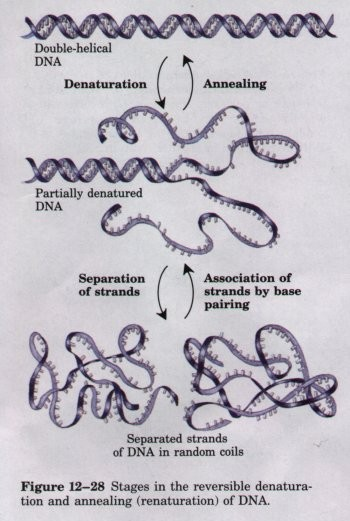
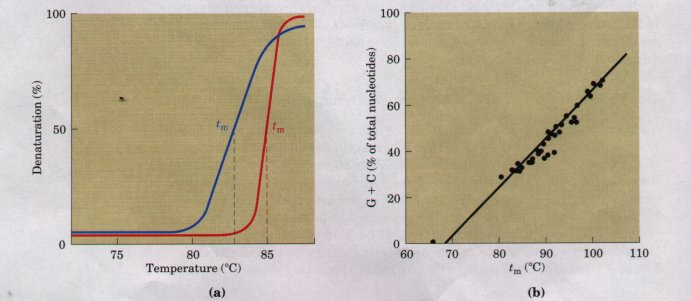
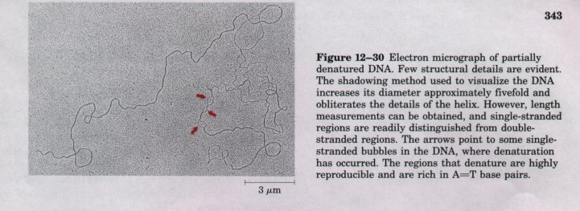
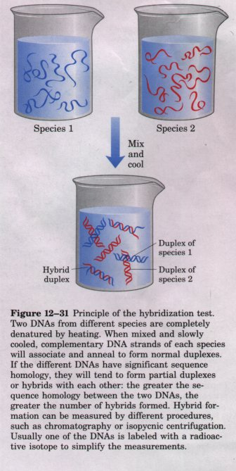
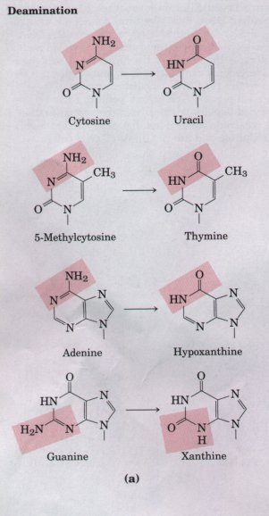
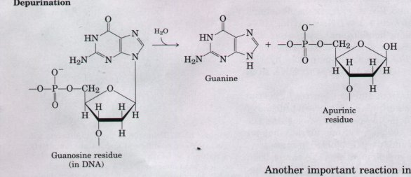
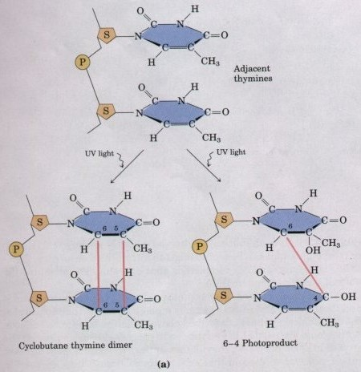
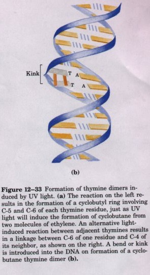

To understand how nucleic acids function, we must understand their chemical properties as well as their structures. DNA functions well as a repository of genetic information in part because of its inherent stability. The chemical transformations that do occur are generally very slow in the absence of an enzyme catalyst. The long-term storage of information without alteration is so important to a cell, however, that even very slow reactions that alter DNA structure can be physiologically significant. Processes such as carcinogenesis and aging may be intimately linked to slowly accumulating, irreversible alterations of DNA. Nondestructive alterations, such as the strand separation that must precede DNA replication or transcription, are also important. In addition to providing these insights into physiological processes, our understanding of nucleic acid chemistry has given us a powerful array of technologies that have applications in molecular biology, medicine, and forensic science. We now examine the chemical properties of DNA and some of these technologies.
| Solutions of carefully isolated, native
DNA are highly viscous at pH 7.0 and room temperature (20
to 25°C). When such a solution is subjected to extremes
of pH or to temperatures above 80 to 90°C, its viscosity
decreases sharply, indicating that the DNA has undergone
a physical change. Just as heat and extremes of pH cause
denaturation of globular proteins, so too will they cause
denaturation or melting of doublehelical DNA. This
involves disruption of the hydrogen bonds between the
paired bases and the hydrophobic interactions between the
stacked bases. As a result, the double helix unwinds to
form two single strands, completely separate from each
other along the entire length, or part of the length
(partial denaturation), of the molecule. No covalent
bonds in the DNA are broken (Fig. 12-28). Renaturation of DNA is a rapid one-step process as long as a double-helical segment of a dozen or more residues still unites the two strands. When the temperature or pH is returned to the biological range, the unwound segments of the two strands spontaneously rewind or anneal to yield the intact duplex (Fig. 12-28). However, if the two strands are completely separated, renaturation occurs in two steps. The first step is relatively slow, because the two strands must first "find" each other by random collisions and form a short segment of complementary double helix. The second step is much faster: the remaining unpaired bases successively come into register as base pairs, and the two strands "zipper" themselves together to form the double helix. |
 |

Viral or bacterial DNA molecules in solution denature at characteristic temperatures when they are heated slowly (Fig. 12-29). The transition from double-stranded DNA to the single-stranded, denatured form can be detected by an increase in the absorption of LTV light (the hyperchromic effect) or a decrease in the viscosity of the DNA solution. Each species of DNA has a characteristic denaturation temperature or melting point: the higher its content of G≡C base pairs, the higher the melting point of the DNA. This is because G≡C base pairs, with three hydrogen bonds, are more stable and require more heat energy to dissociate than A=T base pairs. Careful determination of the melting point of a DNA specimen, under fixed conditions of pH and ionic strength, can yield an estimate of its base composition. If denaturation conditions are carefully controlled, regions that are rich in A=T base pairs will specifically denature while most of the DNA remains double-stranded. Such denatured regions can be visualized with electron microscopy (Fig. 12-30). Strand separation of DNA must occur in vivo during processes such as DNA replication and transcription. As we will see, the DNA sites where these processes are initiated are often rich in A=T base pairs.

Double-stranded nucleic acids with two RNA strands or with one RNA strand and one DNA strand (RNA-DNA hybrids) can also be denatured. Notably, RNA duplexes are more stable than DNA du-plexes. At neutral pH, a double-helical RNA will often denature at temperatures 20°C or more higher than a DNA molecule with a comparable sequence. The stability of an RNA-DNA hybrid is generally intermediate between that of RNA and that of DNA. The physical basis for these differences in stability is not known.
| The capability of two complementary DNA
strands to pair with one another can be used to detect
similar DNA sequences in two different species or within
the genome of a single species. If duplex DNAs isolated
from human cells and from mouse cells are completely
denatured by heating, then mixed and kept at 65°C for
many hours, much of the DNA will anneal. Most of the
mouse DNA strands anneal with complementary mouse DNA
strands to form mouse duplex DNA; similarly, many of the
human DNA strands anneal with complementary human DNA
strands. However, some strands of the mouse DNA will
associate with human DNA strands to yield hybrid
duplexes, in which segments of the mouse DNA strand form
base-paired regions with segments of the human DNA strand
(Fig. 12-31). This reflects the fact that different
organisms have some common evolutionary heritage; they
generally have some proteins and RNAs with similar
functions and, often, similar structures. In many cases,
the DNA encoding these proteins and RNAs will have
similar (homologous) sequences. The closer the
evolutionary relationship between the species, the more
extensively will their DNAs hybridize. For example, human
DNA hybridizes much more extensively with mouse DNA than
with DNA from yeast. The hybridization of DNA strands from different sources forms the basis of a powerful set of techniques essential to the modern practice of molecular genetics. It is possible to detect a specific DNA sequence or gene in the presence of many other sequences if one already has an appropriate complementary DNA strand (usually labeled in some way) to hybridize with it ( Chapter 28 ). The complementary DNA can be from a different species or from the same species; in some cases it is synthesized in the laboratory, using techniques described later in this chapter. Hybridization techniques can be varied to detect a specific RNA rather than DNA. The isolation and identification of specific genes and RNAs relies on these techniques, and new applications of this technology are making it possible to accurately identify an individual on the basis of a single hair left at the scene of a crime or predict the onset of some diseases in an individual decades before symptoms appear (see Box 28-1). |
 |
| Purines and pyrimidines, along with the
nucleotides of which they are a part, undergo a number of
reactions involving spontaneous alteration of their
covalent structure. These reactions are generally uery
slow, but they are physiologically significant because of
the cell's very low tolerance for alterations in genetic
information. Alterations in DNA structure that lead to
permanent changes in the genetic information encoded
therein are called mutations, and much evidence suggests
an intimate link between the accumulation of mutations
and the processes of aging and cancer. Several bases undergo spontaneous loss of their exocyclic amino groups (deamination) (Fig. 12-32a). For example, under conditions found in a typical cell, deamination of cytosine (in DNA) to uracil will occur in about one of every 107 cytosines in 24 h. This corresponds to about 100 spontaneous events per day in an average mammalian cell. Deamination of adenine and guanine is about 100 times slower. The slow cytosine deamination reaction seems innocuous enough, but it is almost certainly the reason why DNA contains thymine rather than uracil. The product of cytosine deamination (uracil) is readily recognized as foreign in DNA and is removed by a repair system (Chapter 24). If DNA normally contained uracil, recognition of uracils resulting from cytosine deamination would be more difficult, and unrepaired uracils would lead to permanent sequence changes as they were paired with adenines during replication. Cytosine deamination would gradually lead to a decrease in G≡C base pairs and an increase in A=U base pairs in the DNA of all cells. Over the millennia, the cytosine deamination reaction could eliminate G≡C base pairs and the genetic code that depends on them. Establishing thymine as one of the four bases in DNA may well have been one of the key turning points in evolution, making the long-term storage of genetic information possible. |
 Figure 12-32 Some well-characterized reactions of nucleotides. (a) Deamination reactions. Only the base is shown. (b) Depurination, in which a purine is lost by hydrolysis of the N-glycosyl bond. The deoxyribose remaining after depurination is readily converted from the /β-furanose to the aldehyde form (see Fig. 12-3). |
Another important reaction in deoxynucleotides is the hydrolysis of the glycosyl bond between the base and the pentose (Fig. 12-32b). This occurs much faster for purines than for pyrimidines. In DNA as many as one in 105 purines (10,000 per mammalian cell) are lost every 24 h under typical cellular conditions. Depurination of ribonucleotides and RNA is much slower and generally is not considered physiologically significant. In the test tube, loss of purines can be accelerated by dilute acid. Incubation of DNA at pH 3 causes selective removal of the purine bases, resulting in a derivative called apurinic acid.

 |
 |